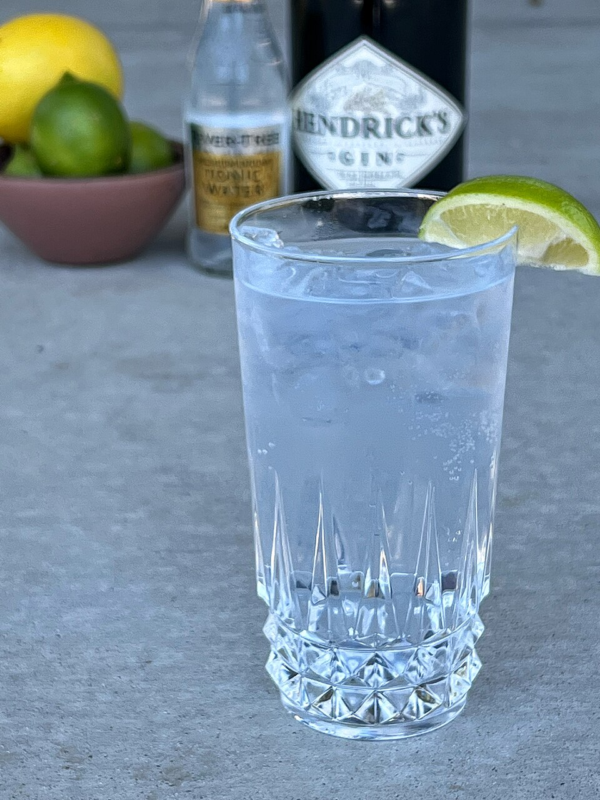

Tavern Schedule
- Monday: Closed
- Tuesday – Wednesday: 4:00 PM – 12:00 AM
- Thursday: 4:00 PM – 1:00 AM
- Friday: 4:00 PM – 2:00 AM
- Saturday: 11:00 AM – 2:00 AM
- Sunday: 11:00 AM – 12:00 AM
Join us at The Gin Mill for lunch burgers on the weekend, rooftop sunset cocktails, electric Carolina game days, or a lively pre-concert round. Conveniently situated along South Tryon Street with straightforward transit and parking access.

Address:
1423 South Tryon St
Charlotte, NC 28203
Directly in front of Amos' Southend
Phone: (704) 373-0782
Bland St Station: Just a 3-minute walk from the Bland Street LYNX Blue Line station.
Rail Trail: Direct pedestrian access from Charlotte Rail Trail.
What to expect during live entertainment and game days at The Gin Mill:


Navigating arrival and concert nights in South End: